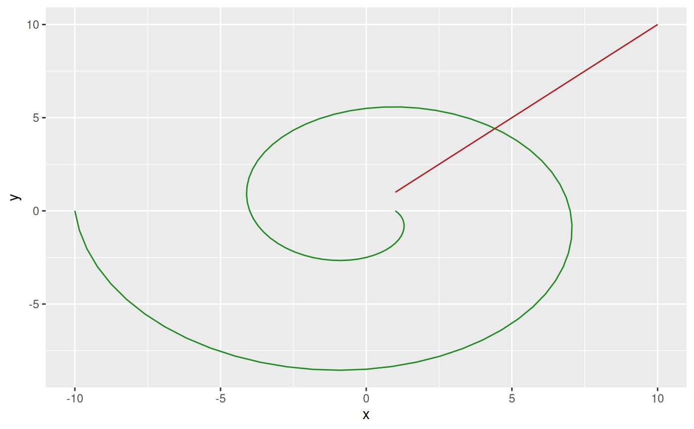

This function creates a trans object that converts radial data to their corresponding coordinates in cartesian space. The trans object is created for a specific radius and angle range that will be mapped to the unit circle so data doesn't have to be normalized to 0-1 and 0-2*pi in advance. While there exists a clear mapping from radial to cartesian, the inverse is not true as radial representation is periodic. It is impossible to know how many revolutions around the unit circle a point has taken from reading its coordinates. The inverse function will always assume that coordinates are in their first revolution i.e. map them back within the range of a.range.
radial_trans(r.range, a.range, offset = pi/2, pad = 0.5, clip = FALSE)
| r.range | The range in radius that correspond to 0 - 1 in the unit circle. |
|---|---|
| a.range | The range in angles that correspond to 2*pi - 0. As radians are normally measured counterclockwise while radial displays are read clockwise it's an inverse mapping |
| offset | The offset in angles to apply. Determines that start position on the circle. pi/2 (the default) corresponds to 12 o'clock. |
| pad | Adds to the end points of the angle range in order to separate the start and end point. Defaults to 0.5 |
| clip | Should input data be clipped to r.range and a.range or be allowed to extend beyond. Defaults to FALSE (no clipping) |
A trans object. The transform method for the object takes an r (radius) and a (angle) argument and returns a data.frame with x and y columns with rows for each element in r/a. The inverse method takes an x and y argument and returns a data.frame with r and a columns and rows for each element in x/y.
While trans objects are often used to modify scales in ggplot2, radial transformation is different as it is a coordinate transformation and takes two arguments. Consider it a trans version of coord_polar and use it to transform your data prior to plotting.
# Some data in radial form rad <- data.frame(r = seq(1, 10, by = 0.1), a = seq(1, 10, by = 0.1)) # Create a transformation radial <- radial_trans(c(0, 1), c(0, 5)) # Get data in x, y cart <- radial$transform(rad$r, rad$a) # Have a look ggplot() + geom_path(aes(x = x, y = y), data = cart, color = 'forestgreen') + geom_path(aes(x = r, y = a), data = rad, color = 'firebrick')